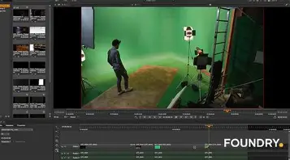

Componentes digitales
Edicion de imagenes
La edición de imágenes es el proceso de modificar, mejorar o transformar fotografías o gráficos digitales mediante software especializado. Se utiliza tanto en diseño gráfico como en fotografía, publicidad, redes sociales y comunicación visual.
la edición de imágenes combina herramientas básicas y avanzadas para transformar fotos en piezas visuales atractivas y funcionales, adaptadas a distintos medios (digitales o impresos).
Edicion de Audio
La edición de audio es el proceso de manipular y mejorar grabaciones sonoras para que sean claras, limpias y agradables al oído. Esto incluye tareas como eliminar ruidos no deseados, ajustar niveles de volumen, sincronizar sonido con imágenes y agregar efectos. La edición de audio es crucial en la producción musical, la creación de podcasts, y la postproducción de películas.
Edicion de Audio Practica
Edicion de Video
La edición de vídeo es el proceso de seleccionar, organizar y modificar secuencias de vídeo con el objetivo de contar una historia, transmitir un mensaje o generar una experiencia visual atractiva. Aunque pueda parecer un proceso técnico, también implica una gran carga creativa.
Hoy en día, editar vídeos no es solo cosa de profesionales del cine. Desde creadores de contenido hasta empresas o estudiantes, todos recurren a la edición para comunicar de forma más efectiva. Además, la demanda de contenido audiovisual en redes sociales, marketing, formación y entretenimiento hace que esta habilidad sea cada vez más valiosa.
Composicion Digital
Radio-Equipo

PAGINA PRINCIPAL